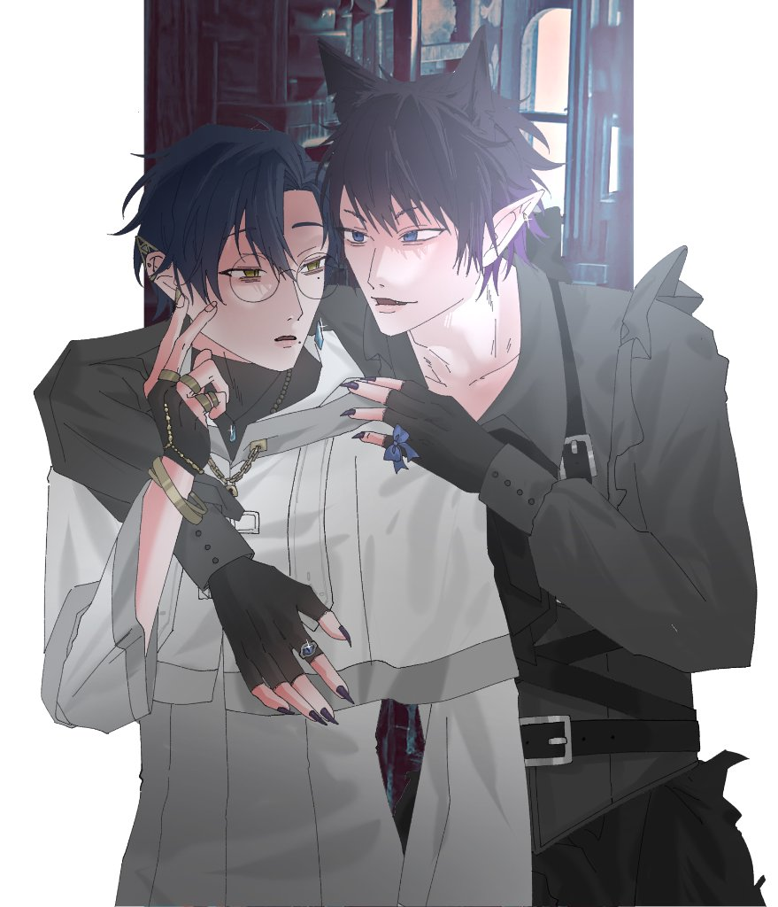
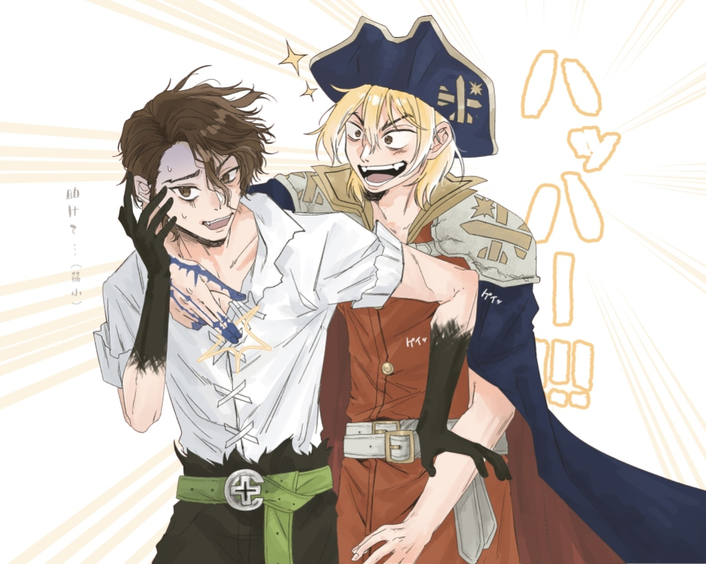

影音播放
作品標題
使用媒材與工具
作品創作理念與說明

台南應用科技大學 (TUT)
我是林詩妤，目前就讀於台南應用科技大學 (TUT)。平時最熱衷的事物就是畫圖、做手作，並且熱中於製作手書動畫 PV。
在插畫方面，我能駕馭多種表現風格：從細膩帥氣的角色立繪、戲劇張力豐富的情境插圖，到軟萌甜美的 Q 版日常皆有涉獵；而在手作上，我親手捏塑、縫製立體娃娃，賦予每個小物件獨特的手感與個性。
特別的是在手書動畫領域，我堅持「全部自己畫、自己用 After Effects (AE) 剪輯」！從畫格分鏡構思、人物動態手繪，到利用 AE 調節節奏卡點、動態位移與氣氛後製，一手包辦打造屬於自己的音樂動態短片。
自己畫分鏡 + 自己用 AE 剪輯完成
純手工立體縫製與趣味配件細節
帥氣立繪、故事張力插圖與 Q 版
享受將生活與腦海中的點子實體化
融合手繪、立體手作與動態影像剪輯的綜合創作實力
熟練掌握人物造型、生動表情與光影氛圍，風格多元包容。
專注於立體手作娃娃製作，感受布料、棉花與配件的手作質感。
全原創獨立流程：分鏡手繪 + After Effects 節奏卡點剪輯。
收錄實際製作的手作娃娃影音、AE 獨立剪輯手書 PV 與日常繪畫創作
全流程獨立創作手書！從前期的連續分鏡畫格手繪，到後期的 Adobe After Effects (AE) 音樂節奏卡點剪輯、動態光影轉場與字型後製，全程由自己一手包辦完成。
純手工立體手作娃娃！影片展示娃娃的飽滿立體度、親膚布料觸感、臉部粉嫩腮紅以及可愛的手持小道具，展現扎實的手作工藝細節。
注重人物骨骼神態與微光氛圍。黑白灰基調中融入冷色微光，精細描繪皮帶釦環、黑指甲與金色飾品等細節。

🎨 日常創作 ‧ 動態分鏡線條俐落富有彈性，背景放射線襯托出強烈動態感，人物面部微表情豐富且極具故事感染力。
展現童趣療癒的 Q 版畫風，櫻桃連體造型設計極具巧思，腮紅與眼睛高光點綴出甜甜的軟糯質感。
每一步的動手實踐，都是創作者無可替代的積累
在校深化視覺美學與造型能力。持續進行日常繪畫創作與手作研習，將對角色的熱愛融入實體手作娃娃與手書動畫的多元實踐中。
深入研究音樂卡點、連續分鏡繪製與 Adobe After Effects (AE) 動態剪輯技術。克服關鍵格繁重手繪與鏡頭調度，成功全獨立輸出高水準手書動畫短片。
從平面插圖跨足立體玩偶娃娃製作，親自動手鑽研版型結構、棉花填塞比例與臉部刺繡細節，享受將心中角色化為真實掌心觸感的創作過程。
從小喜愛動筆畫畫與手作小物件。自學數位繪圖板、分鏡排版與影像軟體，逐步累積扎實的美術基本功與對細節的專注追求。
無論是插畫委託、手作娃娃交流、手書動畫合作洽談，都非常歡迎來信！
點擊右方按鈕即可直接複製信箱地址
台南應用科技大學 (TUT)